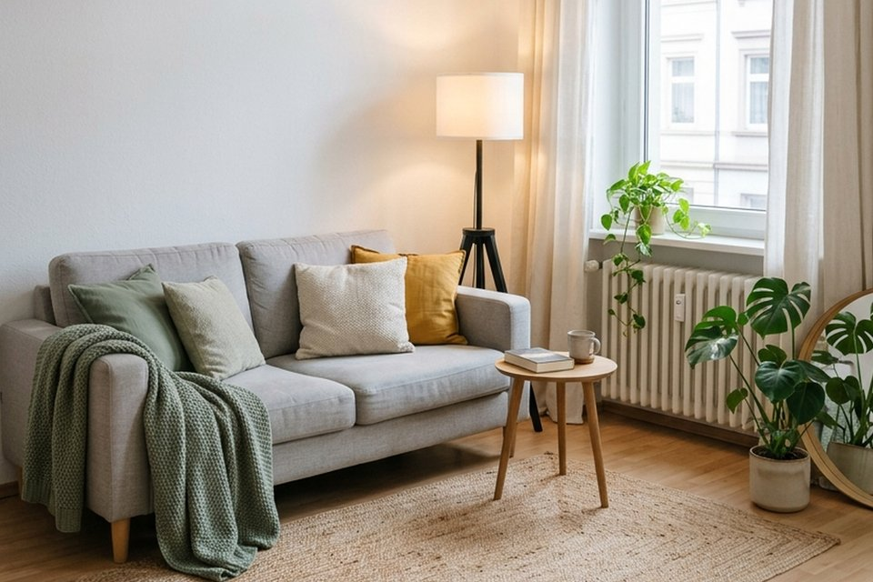

Wohnzimmer-Makeover unter 300 €
Das Sofa bleibt, die Wände bleiben – und trotzdem sieht das Wohnzimmer aus wie neu. Der Trick: ein klares Farbkonzept mit drei Farben und neue Textilien, Licht und Pflanzen. Zusammen unter 300 €.
So geht's in 6 Schritten
1. Drei Farben festlegen
Hier: Salbeigrün, Creme und Senfgelb zu einem hellgrauen Sofa. Alles Neue wird in diesen drei Farben gekauft – so passt es automatisch zusammen.
2. Ein großer Juteteppich
Ein Teppich mit etwa 160 × 230 cm, auf dem die vorderen Sofabeine stehen. Jute ist günstig, robust und bringt Wärme in den Raum.
3. Neue Kissenbezüge und eine Decke
Nur die Bezüge tauschen, die Füllkissen bleiben. Dazu eine grobe Strickdecke in Salbeigrün über die Armlehne.
4. Vorhänge bis zum Boden
Helle Leinenvorhänge knapp unter der Decke aufgehängt lassen den Raum höher wirken.
5. Eine Stehlampe
Warmweißes Licht (2700 K) neben dem Sofa statt Deckenlicht. Mehr dazu: 3 Lichtstimmungen im Vergleich.
6. Pflanzen und ein Spiegel
Eine große Monstera, eine kleine Hängepflanze auf der Fensterbank und ein großer runder Spiegel, der einfach an die Wand gelehnt wird.
Einkaufsliste
| Was | Menge | ca. Preis |
|---|---|---|
| Juteteppich, ca. 160 × 230 cm | 1 | 50–90 € |
| Kissenbezüge | 4 | 20–40 € |
| Strickdecke | 1 | 20–35 € |
| Leinenvorhänge (Schals) | 2 | 30–60 € |
| Stehlampe mit Stoffschirm | 1 | 30–60 € |
| Monstera mit Topf | 1 | 25–45 € |
| Kleine Hängepflanze | 1 | 8–15 € |
| Runder Spiegel | 1 | 25–60 € |
| Beistelltisch rund | 1 | 20–40 € |
Richtwerte für Deutschland, Stand November 2026. Die Preise schwanken je nach Händler und Saison.
Was kostet das Makeover?
Unter 300 €: alles aus der Liste mit günstigen Modellen (ab ca. 230 €).
Komplett mit besseren Stücken: ca. 230–445 €.
Tipp: Teppich und Licht zuerst – die beiden machen den größten Unterschied.
Häufige Fragen
Welche Farben passen zu einem grauen Sofa?
Fast alle warmen Töne: Salbei, Creme, Senf, Terrakotta oder Rost. Zwei bis drei davon reichen.
Und wenn das Zimmer sehr klein ist?
Dann helfen Platzspar-Tricks: Kleine Wohnung vorher/nachher.